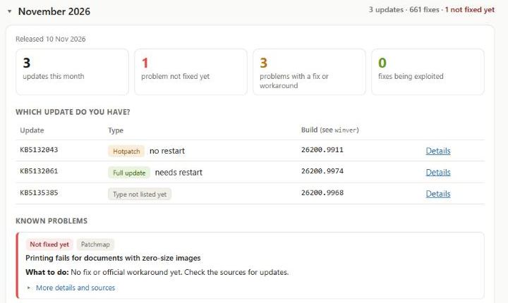
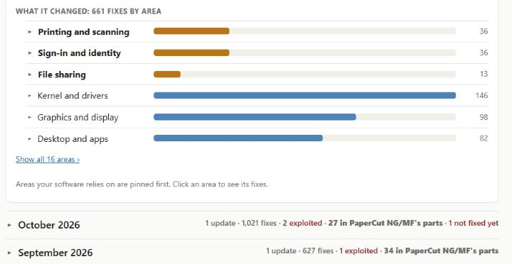
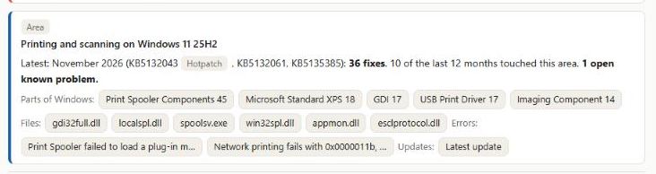

About Patchmap
A free, open-source way to see what each Windows update touched, so you can work out faster whether a problem started with an update.
How to use it
- Pick your Windows version at the top of the page.
- Open a month. It starts with four numbers (updates, problems not fixed yet, problems with a fix or workaround, fixes being exploited), then Which update do you have?: each update with its type (hotpatch, no restart, or full update, needs restart) and build number to compare with
winver. - Read the known problems. Each card has a short What to do line; details and sources are folded underneath.
- Open an area from the bars under What it changed, such as Printing and scanning or Sign-in and identity, to see which parts of Windows were fixed. The 6 biggest areas show first; Show all areas lists the rest.
- Open a part of Windows to see each security fix, with a link to Microsoft's details.


Or type in the search box: an area (print), a part of Windows (Kerberos), an update number (KB5131090), a fix number (CVE-2026-…) or an error code (0x80041008). The area buttons narrow everything to one area.
Four ways in
Start from whatever you have: an update or build (KB5132043, 26200.9911), an area (printing), an error or symptom (0xC1) or a file or part of Windows (localspl.dll, Print Spooler). Suggestions appear as you type, grouped by these four, and the Start from buttons show examples of each. Every result links to the other three: an update to the areas and files it changed, a file to the updates that changed it and related errors, an error to its area and files.


Look up a build number
Pick it from the Build menu next to the Windows version (each build shows its update, month and whether it was a hotpatch), or paste a build number from a PC or server (for example 10.0.20348.5622; run winver to find it). Patchmap tells you which Windows version and update it is, how old it is, how many newer updates and security fixes you are missing, and which known problems are still open for it.
Something broke after an update?
Look up the build (or open the update's page) and open Something broke after this update?: matching known problems, what you'd lose by removing the update (how many security fixes, by area), where to look in the logs for the area that's failing, and safe stopgaps. Updates marked Hotpatch were applied in memory without a restart; Patchmap shows the full update for the same month as an alternative. Searching an error code such as 0xC1 shows matching guidance. This is general guidance, not Microsoft advice.
Compare two builds
Type two update numbers (for example KB5122882 to KB5131090) or two build numbers of the same Windows version, for example 20348.5622 to 20348.5870. Patchmap lists the updates, security fixes (by area) and known problems between them: handy when one server misbehaves and another doesn't.
Files changed
Open a month and choose Files changed to see which Windows files that update changed (old version → new version), grouped by area such as printing or sign-in. Search a file name, for example localspl.dll or spoolsv.exe, to see in which months it changed. File lists come from Microsoft's own list for each update (x64 files); Patchmap compares each month with the one before. They start from September 2026 and grow every month. For hotpatch updates, Patchmap also shows which files were patched in memory (for example localspl.dll via localspl_hotpatch.dll); on hotpatched devices the file on disk keeps the last full or baseline update's version.
My software filter
Pick your print management software under My software (for now: PaperCut NG/MF and YSoft SafeQ). Each month then shows which parts of Windows that software relies on were changed (for example the Print Spooler, file sharing or Active Directory sign-in) and how many fixes touched each. "Relies on" means worth checking after updating, not "this will break". Each product's list says whether it comes from the vendor's public documentation or from support experience. Suggest another product or a correction.
Get alerts
Pick only what you need. Choose an area and a Windows version or product, then copy the feed link into your reader.
Loading…
Open feedFollow Patchmap in any feed reader (Feedly, Inoreader, classic Outlook's RSS Feeds, or a Power Automate flow that posts to Teams). You get a new item when a known problem appears or changes status (for example "Now fixed"), and when a month's security update is added. The feeds refresh every Wednesday.
- Everything: patchmap.verilay.dev/feed.xml
- One Windows version only: Server 2025 · Server 2022 · Server 2019 · Server 2016 · Windows 11 24H2 · 25H2 · 26H2 · Exchange · SQL Server · Microsoft 365 Apps and Office
To subscribe, copy a link above and paste it into your reader's "add feed" or "subscribe" box. No account or email needed.
Exploited fixes
Some weaknesses are already being used by attackers. Patchmap marks those fixes and tells you how many each update carries, so you know the risk before delaying or removing it.
Search exploited to list them. A fix published in one month can be delivered by a later update, so an update's count includes those too.
Known problems
Each card starts with a short What to do line. For problems Patchmap tracks by hand, it's written from the sources; for Microsoft's own problems it points to Microsoft's page, so Patchmap never makes up advice. The red line at the top of the page jumps to any problem in the latest update that isn't fixed yet.
The grey label shows where each problem comes from:
- Microsoft collected automatically from Microsoft's own Windows release health pages.
- Patchmap problems Microsoft hasn't listed publicly (yet), added by hand from news and vendor reports. Every one links its sources and shows the date it was last checked.
Where the data comes from
| What | Source | Updated |
|---|---|---|
| Security fixes, update numbers, build numbers | Microsoft Security Update Guide | Automatically, every Wednesday |
| Microsoft's known problems | Windows release health | Automatically, every Wednesday |
| Other known problems | News and vendor reports, linked on each entry | By hand |
| Areas (printing, sign-in…) | Patchmap's own rules, open to edit | By hand |
| Files each update changed | Microsoft's file list for each monthly Windows update, compared with the month before | Automatically, every Wednesday |
| Exploited fixes | Microsoft Security Update Guide (exploited, publicly disclosed, exploitability) and CISA Known Exploited Vulnerabilities | Automatically, every Wednesday |
| Update types (hotpatch, baseline, out-of-band, preview) | Microsoft's Windows 11 and Windows Server release information pages | Automatically, every Wednesday |
| Troubleshooting steps | Patchmap, open to edit | By hand |
| What print software relies on | Vendor public documentation, or support experience (each list says which), open to edit | By hand |
What's covered
Windows 11 24H2, 25H2 and 26H2, Windows Server 2016, 2019, 2022 and 2025, plus Exchange Server (2016, 2019, Subscription Edition), SQL Server (2017 to 2025) and Microsoft 365 Apps and Office (2016 to LTSC 2024), for the last 12 months of security updates. Build lookup and file lists are for Windows only.
Ideas being considered
No dates yet: more print management products in the My software filter, and alerts by email. Tell us what would help you.
Limits
- Only security fixes are listed automatically. Other bug fixes appear only if they caused a known problem.
- "This update touched printing" means worth checking, not "this will break your printing".
- File lists start from September 2026 and cover x64 files; language (.mui) files are counted but not listed.
- Patchmap isn't Microsoft and isn't official advice. Always check Microsoft's own page before acting.
Help out
Seen a problem an update caused? Report it on GitHub with the update number, Windows version, the symptom or error code, and a link to a source.
Licences
Code: MIT. Patchmap's own data (known problems, troubleshooting guides, area and file tags, software maps): CC BY 4.0, free to reuse with credit to "Verilay Patchmap (Moses Ekbote)" and a link here. Microsoft's data remains Microsoft's (details). Windows is a trademark of Microsoft Corporation.